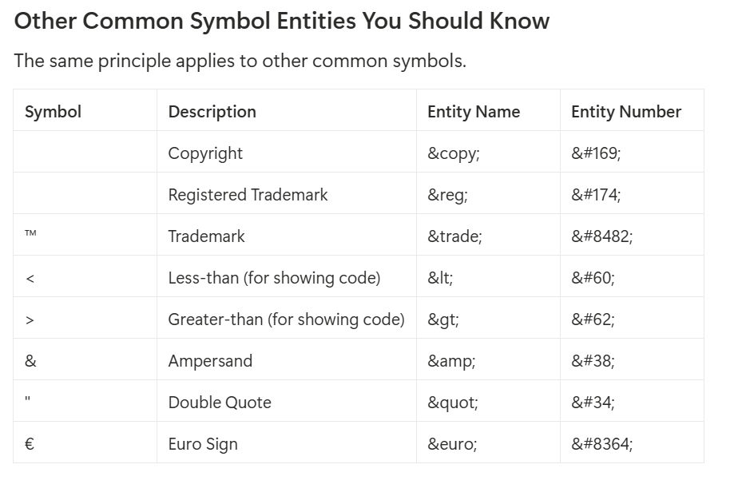

Media
Problem:
The fundamental truth is that a webpage should be able to deliver any kind of content, not just static text and pictures. For years, this was a major problem. To play a video or audio file, browsers had to rely on third-party plugins like Adobe Flash, QuickTime, or Silverlight. This was inefficient, insecure, and inconsistent across different computers.
Solutions:
- Video File
- Audio File
Video File
- Add video in your website using video tag.
-
The Problem We Immediately Face:
If you put this on a page, you'll just see the first frame of the video as a static image. You can't play it, pause it, or change the volume. It's not a video player; it's just a video frame.The Problem We Immediately Face: If you put this on a page, you'll just see the first frame of the video as a static image. You can't play it, pause it, or change the volume. It's not a video player; it's just a video frame. -
The Solution:
We need to add player controls. The browser has a beautiful set of default controls built-in, and we can turn them on with a simple attribute.
The control attribute magic:
The controls attribute is a boolean attribute. You don't need to set it to a value (controls="true" is unnecessary); its mere presence turns the feature on.

Attributes of video tag:
| Attribute | Value | Description |
|---|---|---|
| src | url | Specifies the URL of the video file |
| controls | not required | The video controls should be displayed (i.e. play/pause button etc.) |
| loop | not required | The video will start over again, every time it is finished |
| autoplay | not required | The video will start playing as soon as it is ready |
| muted | not required | This Specifies that the video output should be muted |
| height | pixels | Sets the height of the video player |
| width | pixels | Sets the width of the video player |
| preload |
|
Specifies if and how the author thinks the video should be loaded when the webpage loads |
| poster | url | Specifies an image to be shown while the video is downloading, or until the user hits the play button |
The iframe Tag
Embed the youtube videos using iframe in 2 ways.
- Copy link from the address bar of search engine then modify the link as shown below:
- Copy link from the youtube video then modify the link as shown below:


Problem:
If user wants to watch in the full screen. He will be not able to do that
Solution:
Use "allowfullscreen" attribute in iframe
Example:
Example of iframe using table
Code:

Output:

Audio File
- Add audio in your website using audio tag.
- The good news is that the audio tag works almost identically to the video tag, just without the visual component.
Attributes of audio tag:
| Attribute | Value | Description |
|---|---|---|
| src | url | Specifies the URL of the audio file |
| controls | not required | The audio controls should be displayed (i.e. play/pause button etc.) |
| loop | not required | The audio will start over again, every time it is finished |
| autoplay | not required | The audio will start playing as soon as it is ready |
| muted | not required | This Specifies that the audio output should be muted |
Example:
Problem: Not all browsers support the same video/audio formats.
Chrome might prefer the modern .webm format, while Safari on an iPhone might only support .mp4. If you only provide one src, some of your users won't be able to see your video.
Solution: source tag
The source tag is used to specify multiple media resources for video as well as audio media elements.
Example:

Different file formats for audio & video used in source tag
| File | Different Formats | Description |
|---|---|---|
| Audio | .mp3 | An audio format from MPEG(Moving / Motion Pictures Experts Group). |
| .aac | Advanced Audio Coding, standard format on Iphone, youtube etc | |
| .ogg | ogg : An Open container and free audio format. | |
| Video | .mp4 (H.264 codec) | This is the most widely supported format today. Almost all modern browsers can play it. |
| .webm (VP8/VP9 codec) | This is an open-source format heavily promoted by Google. It has excellent support in Chrome and Firefox. | |
| .ogg(Theora codec) | This was an older open-source alternative, more popular before .webm took over. |
Problem: Your video is not accessible.
Users who are deaf or hard of hearing can't understand your video. Users in a noisy environment (or a quiet office) can't listen to the audio. Users speaking another language won't understand it.
Solution: The track element
The track element allows you to add timed text tracks, such as subtitles or captions. It's a self-closing tag that points to a special text file, usually in WebVTT (.vtt) format.
Example:

Create Multi-media page
Create multiple .html file and link that, using anchor tag
Use header section, main section, footer section for creating each page
(header):Mostly use as navigation bar. Title of the page.
(main): Mostly used to add content in the website.
(footer):Mostly use to give extra informationa and copyright message.
Example:

How to add Copyright
The Two Ways to Create the Copyright Symbol. You can use either the entity name or the entity number. Both produce the exact same result. The entity name is generally easier to remember.
-
Using the Entity Name (Recommended):
This is the most common and readable method.
-
Using the Entity Number
This method uses the character's numerical code. It works just as well but is less descriptive.
Example:
How to Deploy website:
We can deploy our website using netlify. It is the free tool.
Netlify gives automatically security i.e. https.
Steps:
- Create account on netlify.
- Click "Try Netlify Drop or Choose a template"
- Now you will get acess to your local file manager. Select the folder in which you have all the files and then click "upload".
- After uploading, click "Quick Setup".
- Give name to your project and cick to "Update project name".
- Click "Finish later".
- You will get link.